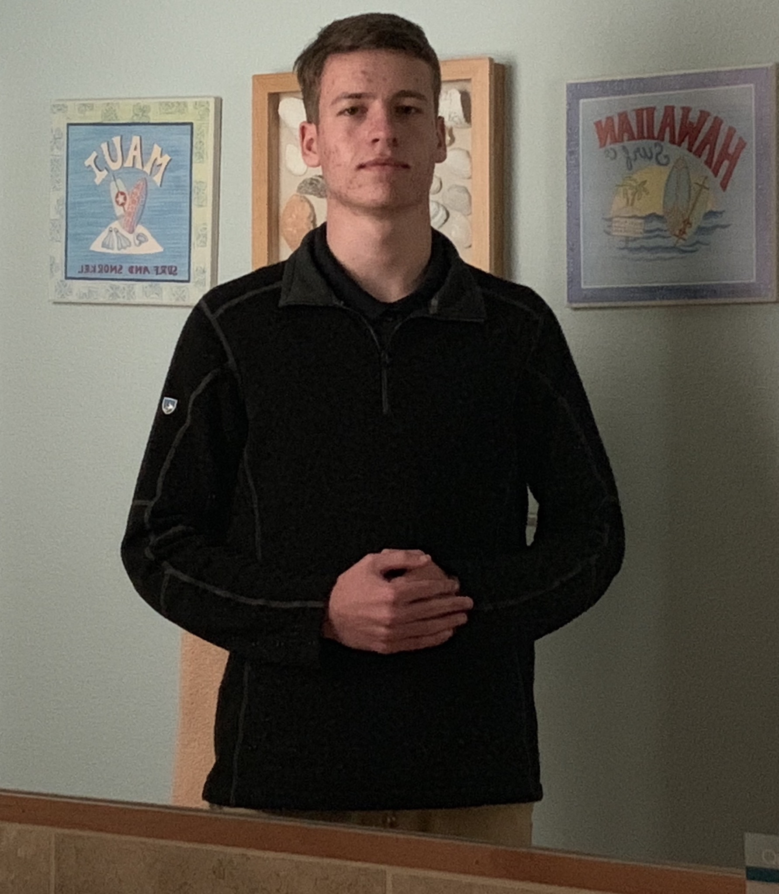

CS17028 Home
My name is Jace Williams, and I am a third year Computer Science major at Indiana State University. I work at Sam's Club part-time, and enjoy developing utility programs for some of the applications I use in my free time, including Discord and osu!
Here are a couple other sites I commonly use:
osu!
osu! is a rhythm game I play frequently, where I am involved with the player and development communities.
Youtube
On Youtube, I regularly watch videos on a variety of topics I am interested in, including travel, city planning, cooking, and coding.